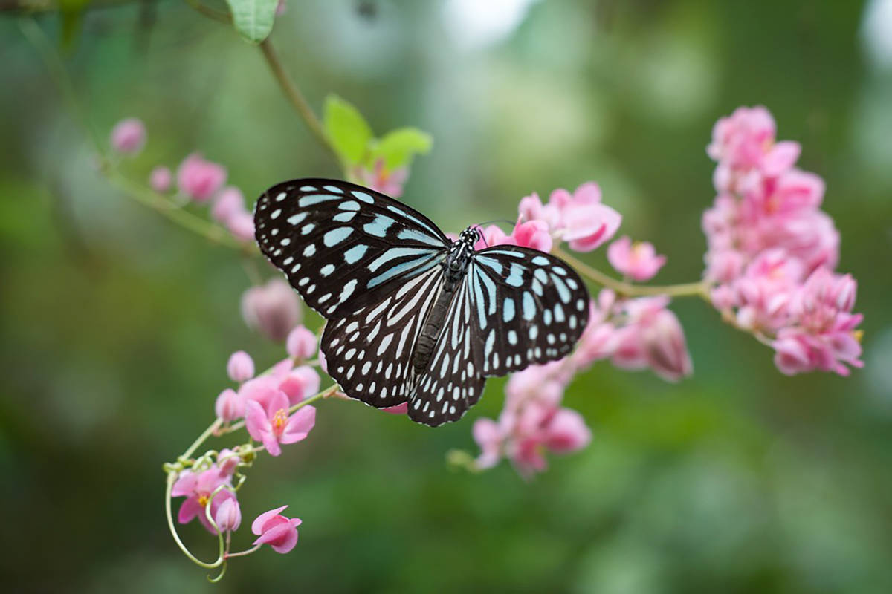
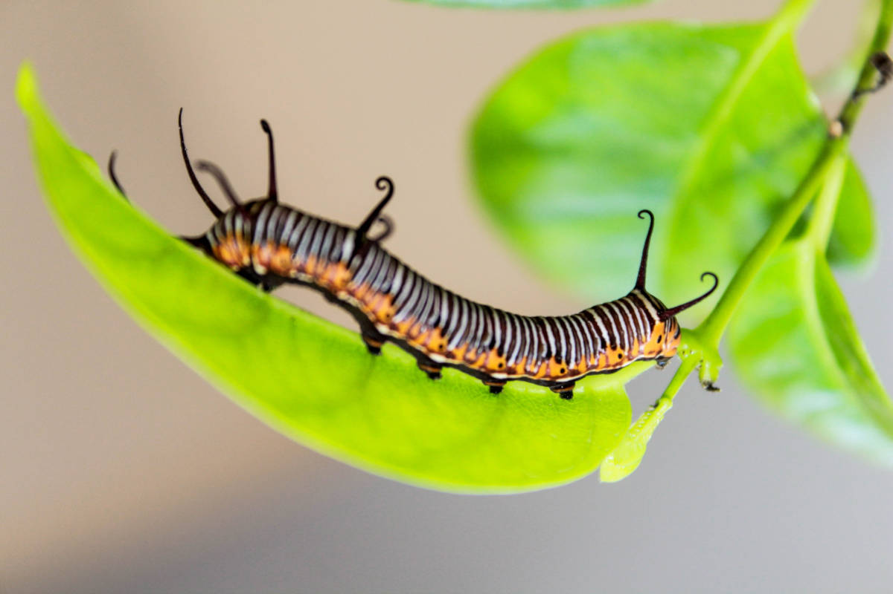

Um olhar mais profundo e abrangente sobre esses belos insetos.
Os aspectos fascinantes das borboletas
As borboletas são criaturas fascinantes e belas que encantam com suas cores vibrantes e padrões intricados. Esses insetos, pertencentes à ordem Lepidoptera, têm uma história evolutiva rica e são encontrados em uma variedade de habitats ao redor do mundo. Neste texto, exploraremos alguns aspectos interessantes sobre as borboletas, desde sua anatomia e ciclo de vida até sua importância ecológica.
Anatomia das borboletas:
As borboletas possuem características únicas em sua anatomia. Seu corpo é dividido em três partes principais: cabeça, tórax e abdômen. Elas têm seis patas, dois pares de asas membranosas cobertas por escamas coloridas e uma probóscide longa e enrolada, que usam para se alimentar do néctar das flores.
Para voar, as borboletas dependem de suas asas elegantes e leves. Essas asas são cobertas por escamas microscópicas, que contribuem para as diversas cores e padrões encontrados em diferentes espécies. As cores vibrantes das borboletas podem servir para camuflagem, sinalização de toxicidade ou para atrair parceiros durante o acasalamento.

Ciclo de vida das borboletas:
O ciclo de vida das borboletas passa por uma metamorfose completa, que consiste em quatro estágios distintos: ovo, larva (ou lagarta), pupa (ou crisálida) e adulto. A fêmea deposita seus ovos em plantas específicas, que servirão de alimento para as lagartas recém-nascidas. Durante a fase de larva, as borboletas passam por diversas mudas, crescendo e se alimentando ativamente.
Quando chega o momento de se transformar em adulto, a lagarta constrói um casulo ou crisálida, onde ocorre a metamorfose. Dentro desse casulo protetor, a lagarta se transforma em uma borboleta completa, desenvolvendo asas, antenas e outras características distintivas. Após emergir do casulo, a borboleta está pronta para voar e iniciar sua jornada.

Importância ecológica das borboletas
As borboletas desempenham um papel crucial nos ecossistemas. Elas são polinizadoras eficientes, transferindo pólen de uma flor para outra enquanto se alimentam de néctar. Esse processo ajuda na reprodução das plantas, promovendo a diversidade genética e contribuindo para a saúde dos habitats naturais.
Além disso, as borboletas são indicadores da saúde ambiental. Sua presença ou ausência em determinadas áreas pode refletir a qualidade do ambiente e a disponibilidade de recursos para outras espécies. Por isso, estudar e conservar as borboletas é essencial para entender e proteger a biodiversidade como um todo.